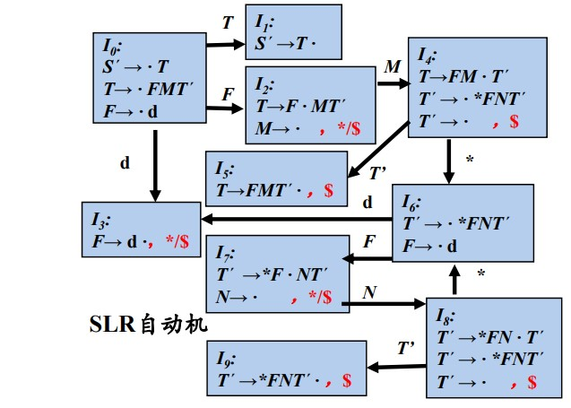

"书接上文"
概述
语义翻译: 语义分析和中间代码生成一起实现.
语法制导翻译: 在语法分析时实现语义翻译. 使用上下文无关文法(CFG)来引导对语言的翻译, 是一种面向文法的翻译技术.
基本思想
语义属性: 在 CFG 中为文法符号设置语义属性, 表示语法成分对应的语义信息.
如何计算:
- 用文法符号所在的产生式相关联的语义规则计算
语法制导定义(SDD):
- 将每个文法符号和一个语义属性集合相关联
- 将每个产生式和一组语义规则相关联, 这些规则用于计算产生式中各个文法符号的属性值
- 注意: 同一个产生式出现相同符号时, 需要以下标区分, 因为有不同的语义含义
- 注意: 语义规则可以是一些 副作用 如打印等等
例子:
| 产生式 | 语义规则 |
|---|---|
| \(D \rightarrow T\ L\) | \(L.inh = T.type\) |
| \(T \rightarrow int\) | \(T.type = int\) |
| \(T \rightarrow real\) | \(T.type = real\) |
| \(L \rightarrow L_1, id\) | \(L_1.inh = L.inh\) |
语法制导翻译方案(SDT)
- 在产生式右部嵌入程序片段 (语义动作)
例子:
| \(D \rightarrow T\ \{L.inh = T.type\}\ L\) | |
| \(T \rightarrow int\ \{T.type = int\}\) | |
| \(T \rightarrow real\ \{T.type = int\}\) | |
| \(L \rightarrow \{L_1.inh = L.inh\}\ L_1, id\) |
语义动作在产生式的位置决定了动作的执行时刻: 例如第一个产生式, 在分析出\(T\)后, 可以根据语义动作, 将后面的\(L\)的语义属性赋值
语法制导定义 SDD
分为 综合属性 和 继承属性
综合属性(Synthesized attribute)
在分析树上的结点\(N\)的 非终结符 \(A\)的综合属性只能通过\(N\)的子节点或本身的属性值来定义.
继承属性(Inherited attribute)
在分析树上的结点\(N\)的 非终结符 \(A\)的继承属性只能通过\(N\)的父节点, 兄弟结点或本身结点的属性值来定义.
终结符只有综合属性, 原因是其综合属性指向的是符号表序号(或者说是词法分析器提供的词法值), 不论其父结点怎么变, 终结符的属性都不会变, 因此不能存在继承属性. \(SDD\)中也没有计算终结符属性值的语义规则.
注释分析树(Annotated parse tree)
在分析树中标明语义值.
SDD 的求值顺序
在对语法分析树的一个结点求属性值之前, 应该 先求出它所依赖的所有属性值
依赖图(Dependency graph)
- 如果\(X.a\)的值 依赖于 属性\(Y.b\)的值, 则依赖图中有一条 从 Y.b 指向 X.a 的有向边. 方便起见, 可以将 综合属性放在结点的右边, 继承属性放在左边.
- 注意: 如果语义规则中含有副作用 (即调用了某个函数, 函数中用到了语义属性), 则为它创建一个 虚拟结点, 如下所示
可行的求值顺序: 拓扑排序, 依赖者的序号大于被依赖者的序号.
- 只有综合属性的 SDD, 可以按照任意自底向上的顺序计算它们的值
- 同时具有综合属性和继承属性的 SDD, 不能保证存在应该顺序对各个结点上的属性进行求值
- 依赖图中没有环, 则至少存在一个拓扑排序
给定一个 SDD, 很难确定是否存在某个语法树, 使得依赖图无环, 但存在 \(L\)-属性定义 和 \(S\)-属性定义 保证每个语法分析树都存在求值顺序, 依赖图无环.
\(S\)-属性定义
仅使用综合属性的 SDD, 可以在 自底向上 的语法分析过程中实现
\(L\)-属性定义
在一个产生式所关联的各属性之间, 依赖图的边 可以从左到右, 但不能从右到左. 正式定义为: 一个 SDD 是\(L\)-属性定义, 当且仅当它的每个属性要么 是一个综合属性 要么 是满足如下条件的继承属性
- 假设存在一个产生式\(A \rightarrow
X_1X_2\cdots X_n\), 其右部符号\(X_i\)的继承属性仅依赖于
- \(A\)的继承属性 (不能依赖于父结点的综合属性, 因为父结点的综合属性可能依赖子结点的继承属性, 会导致循环依赖)
- 产生式中\(X_i\)左边的符号的属性 (包括综合属性和继承属性)
- \(X_i\)本身的属性, 但\(X_i\)的全部属性不能在依赖图中形成环路
每个\(S\)-属性定义都是\(L\)-属性定义
语法制导翻译方案 SDT
以下两种 SDD 对应的 SDT 可以在语法分析过程中实现
- \(LR\)分析, \(SDD\)是\(S\)属性的
- \(LL\)分析, \(SDD\)是\(L\)属性的
S-SDD: 转化为 SDT 时, 将每个语义动作放在产生式的最后 L-SDD: 转化为 SDT 时
- 计算继承属性的动作插入到非终结符的前面
- 计算综合属性的动作放在产生式的最后
在非递归的预测分析过程中进行翻译
一个非终结符的继承属性和综合属性在分析过程中的计算时间是不一样的
- 继承属性的计算在该非终结符出现之前, 综合属性的计算在该非终结符的所有子结点分析结束之后
为非终结符的综合属性单独创建一个元素Xsyn,
存放终结符 X 的综合属性, 此时在分析栈中, 包含三种类型的元素:
- \(action\): 用于存放执行语义动作的代码指针
- \(A\): 非终结符\(A\)的继承属性
- \(Asyn\): 非终结符\(Asyn\)的综合属性
分析时的基本原则是 综合记录出栈时, 要将综合属性值复制给后面特定的语义动作, 变量本身的记录出栈时 (发生推导的时候), 如果含有继承属性, 则将其值复制给后面的特定语义动作
具体例子见 非递归翻译例子
在递归预测过程中进行翻译
将每个非终结符实现为一个函数, 该非终结符的每个继承属性是该函数的一个形参, 返回值是该非终结符的综合属性
L-属性定义的自底向上翻译
自底向上翻译要求翻译动作在 归约后调用, 但 L-SDD 中有一部分语义动作处于产生式的中间, 因此使用自底向上翻译时, 需要添加 标记非终结符, 代表 产生式中间的语义动作, 即继承属性对应的语义动作
其中\(M, N\)位于实际待求继承属性非终结符的左侧, 因此 \(M, N\)的综合属性是后续非终结符的继承属性
上述文法所对应的\(SLR\)自动机如下:
 考虑输入串
\[ 3 * 5 \]
具体见视频讲解: L-属性自底向上例子
- Post title: 【编译原理】语义分析
- Create time: 2023-01-03 17:42:03
- Post link: 2023/01/03/CS/Compiler-SemanticAnalysis-zh/
- Copyright notice: All articles in this blog are licensed under BY-NC-SA unless stating additionally.